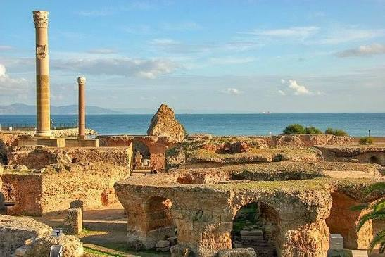
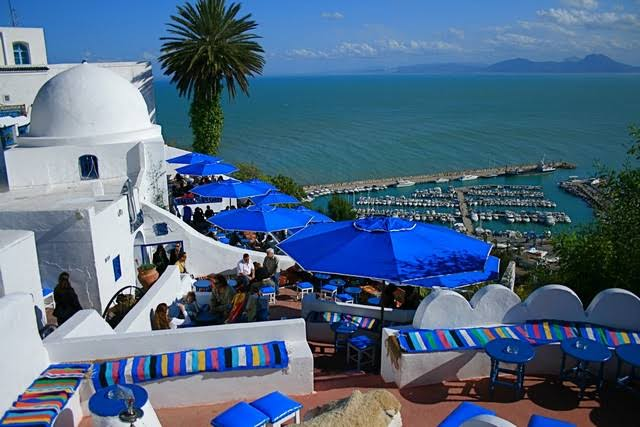
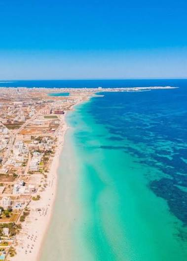
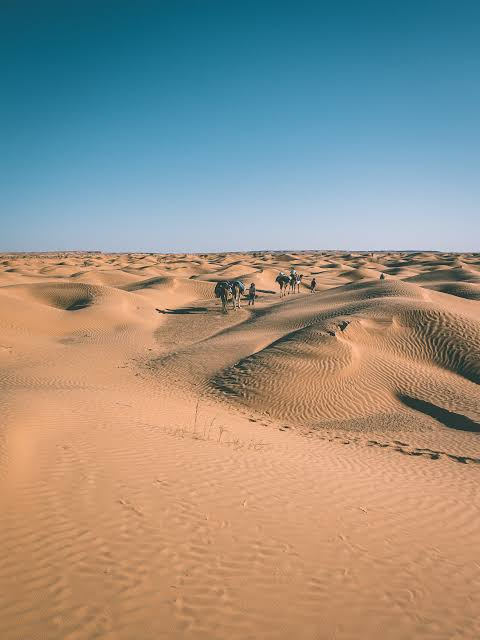

tunis et carthage

capitale, médina classé à l'UNISCO, vestiges de la clé antique de carthage
- visite de la médina
- sites archéologiques de carthage
- musée du bardo

capitale, médina classé à l'UNISCO, vestiges de la clé antique de carthage

village aux maisons blanches et aux portes bleues, face à la mer méditerranée

Ile aux pplages de sable fin, connue pour son artisanat et sa douceur de vivre

Porte du désert, point de départ des excursions dans les grande dunes
| destination | region | meilleur periode | prix indecatif (séjour 3 jour) |
|---|---|---|---|
| tunis et carthage | nord | mars a mai | 350 |
| djerba | sud-est | mai a septembre | 450 |
| douz et le sahara | sud | octobre a avril | 520 |